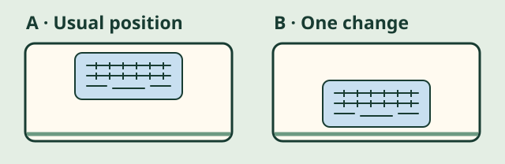
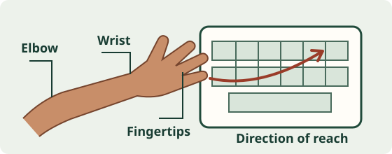
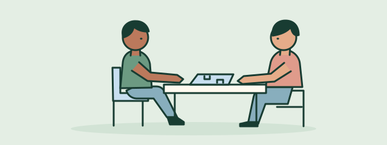

Setup A · Your usual arrangement
Type the sample using the keyboard, input method, and position you normally use.
Assistive technology for everyday tasks
Explore accessible typing setups and assistive technologies designed to help people with one-sided motor difficulties complete everyday tasks.
Erry Mobility grew out of my experience living with cerebral palsy and looking for practical, affordable ways to make daily tasks more manageable.

Sending a short message can involve reaching across the keyboard, aiming for individual keys, and correcting unintended presses. How demanding each step feels depends on the person, their input method, and their setup.
Type the sample using the keyboard, input method, and position you normally use.
Type the same sample after one change, such as moving the keyboard closer. Compare time, errors, and how it felt.
Rehabilitation engineering can make a task more accessible by changing what it demands. A keyguard separates nearby keys. Sticky Keys lets you enter shortcuts one key at a time. Keyboard position and one-handed typing strategies can change reach. Different adaptations suit different people and tasks.
The nervous system uses sensory information and activates muscles to coordinate movement. Shoulder, elbow, wrist, and finger movement can all affect which keys someone can reach comfortably. Cerebral palsy affects movement differently for different people.

A closer keyboard may shorten a reach, while a keyguard may help some users target a key. Fit, comfort, and user choice guide the adaptation.
Compare elapsed time, final text errors, correction actions, comfort, and preference. Faster typing can come with more errors or less comfort. These measures describe the task in this session.
If reaching distant keys makes a message harder to type, compare your usual position with one adjustment. Use the results and your comfort feedback to decide what to explore next.
Spoon use · Balance and mobility · 3D Anatomy Studio

Learn about cerebral palsy and the different ways people experience everyday life.
Learn about CP
Explore adaptations for typing, writing, using a spoon, and other everyday activities.
Browse everyday activities
Understand how equipment and accessibility features can support different needs.
Explore support options
Record what you tried, how it felt, and what you would like to explore next.
Open my journalWhy I built Erry
Living with cerebral palsy has meant finding my own ways to approach everyday tasks—and often explaining those experiences to others. I built Erry Mobility to share clear information, explore practical adaptations, and create space for the small discoveries that matter to us.
Read my storyThe Engineering Lab explains how a trial is measured and what further evaluation would require. Personal experience shaped the design brief. Evaluation with intended users is still needed.